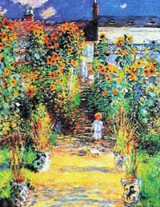
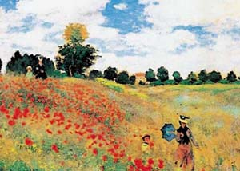

|
Claude MONET |
|||
|---|---|---|---|
|
Paris 1840-1926 Giverny |
|||
|
Chef de file incontesté des impressionnistes, il passa son enfance au Havre où il fût l'élève de Boudin, il s'installa à Paris en 1858. Il y rencontra Troyon, peintre de l'école de Barbizon. En 1860, il fit ses études à l'Académie Suisse, se lia d'amitié avec Pissarro, Courbet, Bazille, Renoir, Sisley et fut particulièrement impressionné par Manet. Grâce à une collecte d'argent, en 1890, il fit entrer « l'Olympia » peint par ce dernier dans le Patrimoine français. Cette même année il acheta sa maison de Giverny dont le jardin et l'étang furent sa source d'inspiration jusqu'à sa mort. Cézanne dit de lui « Ce n'est qu'un œil, mais mon Dieu, quel œil. » Grand voyageur, dès 1912 son succès s'étendit à l'étranger. En 1920, il refusa son intégration à l'Institut de France. |
|||
|
QUELQUES OEUVRES |
|
|---|---|
|  |  |
LE JARDIN DE MONET A VETHEUIL |
LES COQUELICOTS A ARGENTEUIL |